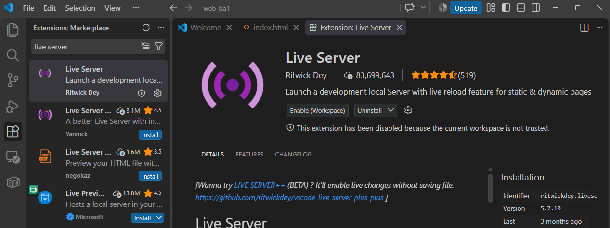

Guide d'installation
Trois choses à installer avant la séance 2 : deux navigateurs, VS Code, et son extension Live Server. Comptez une quinzaine de minutes.
1. Deux navigateurs
Vous en avez sans doute déjà un. Installez-en un second : vous en aurez besoin dès la séance 1 pour tester vos pages dans plusieurs navigateurs.
Edge est déjà installé sur Windows : il compte comme second navigateur si vous avez déjà Chrome ou Firefox.
2. VS Code
L'éditeur de code que nous utiliserons tout au long du cours. Téléchargez-le sur code.visualstudio.com, puis lancez l'installateur (acceptez les options par défaut).
Mac ou Windows ?
Les captures et les raccourcis de ce cours sont donnés pour
Windows. Sur Mac, remplacez Ctrl par
Cmd dans tous les raccourcis clavier.
3. L'extension Live Server
Dans VS Code :
- Ouvrez le panneau Extensions dans la barre
latérale gauche (l'icône à quatre carrés), ou
Ctrl+Shift+X. - Cherchez Live Server (auteur : Ritwick Dey).
- Cliquez sur Installer.

4. Vérifier que tout fonctionne
- Créez un dossier vide, par exemple
test, et ouvrez-le dans VS Code (Fichier → Ouvrir le dossier). - Créez un fichier
index.htmldedans. - Tapez
!puisTab: VS Code génère un squelette de page. - Faites un clic droit sur
index.html, puis Open with Live Server.
Si un navigateur s'ouvre sur une adresse du type
127.0.0.1:5500, tout fonctionne. Vous retrouverez ce
test, expliqué en détail, à la
séance 2.
Bloqué·e ?
Postez votre question dans le canal Teams du cours, avec une capture d'écran du message d'erreur. Quelqu'un a sans doute déjà rencontré le même problème.